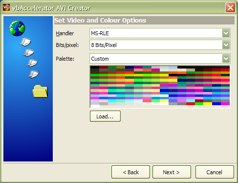
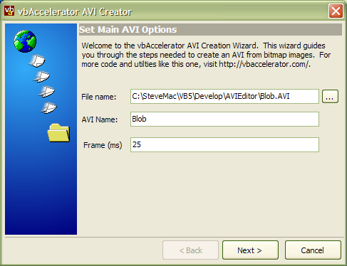
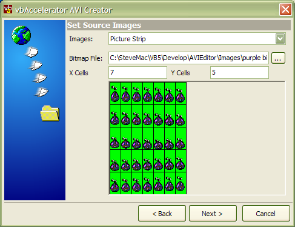
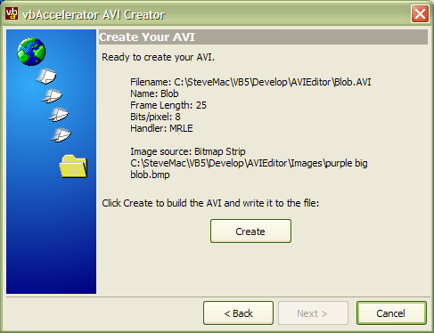

VB5 AVI Creator (143K)
VB5 AVI Creator (143K)
 VB6 AVI Creator (139K)
VB6 AVI Creator (139K)
 23 Nov 2003
23 Nov 2003
First Posted
 Transparent AVI Player Control
Transparent AVI Player Control
 ComCtl32.DLL Animation Control Class
ComCtl32.DLL Animation Control Class
 Reading Data from Local or External Library Resources
Reading Data from Local or External Library Resources
 IShellFolder Extended Type Library Version 1.2 (ISHF_Ex.Tlb)
IShellFolder Extended Type Library Version 1.2 (ISHF_Ex.Tlb)

AVI Creation
Write your own AVIs from Visual Basic
One thing that's always been tricky with AVIs is the lack of suitable software to create them. This article provides VB classes allowing 8-bit and 24-bit AVIs to be created, using any available Codec on the system. The demonstration project uses these classes to provide a pretty comprehensive programmer's AVI creation utility.
Before You Begin
The AVI video codecs are notoriously under-documented and some issues can arise when trying to create arbitrary AVIs using them. In particular, look out for the following:
- The MSRLE 8 bits/pixel AVI generation has only been demonstrated to set the palette correctly under Windows XP with MSRLE32.DLL version 5.1.2600.1106. On other versions, the palette is ignored. This issue is under intensive research.
- Some Codecs don't work unless the dimensions of the source images are compatible. For example, the MPG4 codecs will only work properly for AVIs which are an even multiple of 4 bytes in each dimension.
About AVIs and Compressors
In its simplest form, an AVI is just a stream of Device Independent Bitmaps (DIBs) written in series into a file with some header information describing the type and size of a DIB. However, without any form of compression very large files can be created. For example, the File Download AVI you get when you are downloading using IE consists of 31 frames, each of which is 272 x 60 pixels. Even if we use 8 bits/per pixel bitmaps for each frame, the raw data size would be 272 x 60 x 31 = 494k. If you look at the actual AVI stored in Shell32.DLL, you'll see it is only 11k in size. This reduction in size is created by compressing the file.
There are various forms of compression available, however, they typically fall into two types:
- Run Length Encoding
A run-length encoding algorithm looks for runs of pixels with the same value. Then rather than writing one byte for each pixel, it instead writes out the value followed by the count for that pixel. These algorithms are lossless and you get exactly the same image back when it is decompressed. These properties make Run Length Encoding ideal when not many pixels change between frames, frames include large areas of continuous pixel colour and when you want to maintain sharp edges in the result. This is the algorithm used for all of the AVIs used in Windows, which use the MRLE (Microsoft Run-Length Encoding) implementation. Note that MRLE only works on 8 bits/pixel images. - Frequency Encoding
Frequency domain encoding is a more general purpose encoding algorithm which yields good compression regardless of the source material. These algorithms typically use Fourier transformations and effectively apply a low-pass filter to the image. As a consequence, some detail is lost and sharp edges are blurred. Examples of this type are the MPG4 and CVID compressor implementations.
Identifying Compressors
Generally, the Multimedia functions in Windows have been documented from the standpoint that there are no predefined multimedia types, compressors or decompressors. That may be useful to someone, maybe a driver writer, as the system is generic, and allows different implementations to be plugged in. But it isn't so helpful to anyone who just wants to write some code which uses the API, since there are no functional examples in the documentation which you can use. This is very irritating. I would suggest as a minimum that there ought to be a reference implementation to test against, which would at least allow you to prove your code is workable prior to experimenting with the other, utterly undocumented, compressors you may find.
In any case, particular multimedia types and compressors are identified using a unique four-byte character code (normally referred to as FourCC). Since four bytes are used, the FourCC value can be held as a long value, and translated to and from a character representation.
There are two FourCC parameters which are used to identify the type of compressor to use in the API:
- fccType
This specifies the type of multi-media being handled. For video this is (always?) set to 'vids'. - fccHandler
This specifies the specific compression implementation. The types of compressor that are available will depend on what you have installed on your system.
The code provided with this article allows either 8-bit or 24-bit AVIs to be created, however as noted above if your intention is to create an AVI for use with the Common Controls AVI player then you should be using 8 bits/pixel images and the 'mrle' compressor.
Using the Programmer's AVI Creator
The AVI Creator wizard in the download exercises all of the features of the classes. It divides creation into four steps:
- Setting the name of the AVI to create, and the length of each frame.
- Choosing the bit-depth of the resulting AVI, the Video compressor to use and a palette if you want to create an 8-bit AVI.
- Selecting the images to be included.
- Creating the AVI itself.
1. Setting the Main AVI Options
AVI Creator Main Options Page
This page is fairly self-explanatory. First choose the file to write to, adjust the AVI name if you wish and then set the frame duration in milliseconds.
2. Setting the Compressor and Bit-Depth
Video Compressor, Bit-Depth and Palette Page
In this page you can choose between 8 Bits/Pixel and 24 Bits/Pixel AVIs. The available video-compressors on your system are enumerated in the Handler drop-down box. At this point I have not determined how to only list handlers which are appropriate for each output format, so all handlers are displayed. However, when you choose the bits/pixel for the AVI, the default handler is automatically selected for you.
If you choose to create an 8-bit AVI, then you will want to ensure that the source images that you will create the AVI from all have the same palette, and that you have a copy of the palette's colours in the JASC palette format. You can create these files either using Paint Shop Pro or programmatically with the cPalette class in the code. Standard palettes for 16 colours, half-tones and web-safe colours are also available.
3. Choosing the Image Source
Image Source page with bitmap strip option.
To create the AVI, you can either choose to include all bitmaps in a directory, or you can load a bitmap strip which contains each of the images. When using bitmap strips, the application assumes that the next frame is the next image in the x direction first, and moves down a row whenever it moves off the end of the bitmap strip image.
Note that if you want to create a particularly large AVI with many frames then this utility has the wrong UI for the job since it loads up all the bitmaps into a single preview bitmap. It would be easy to comment this out of the source code, though.
4. Creating the AVI
Final Step in AVI Creation
The last step allows you to review your settings and then create the file. Note that the AVI file must not be open in any other AVI player in order to write out the result.
Creating AVIs In Code
If you want to write your own code to create AVIs, then you will need to include these classes from the download:
- cAVICreator
This class is the main class which contains all the methods for creating AVIs. - cPalette
Provides the ability to manage the palette associated with 8-bit images. - cBmp
A wrapper class around a Windows bitmap which is used to provide data for individual frames to cAVICreator. - cDIBSection256
A utility class used internally by cAVICreator when writing 8-bit images. Using this class ensures that the correct palette is associated with the images. - cMemDC
A wrapper class around a Windows memory DC. This class is used internally by the cAVICreator but can also be used in the application to draw into a cBmp object. - mRGBQuad
Provides the shared definition for the shared RGBQUAD user-defined type that is used in various other classes.
Optionally, you may also want to include the code for enumerating video handlers and suggesting a default handler for a particular image format:
- cVideoHandlers
Provides a list of installed video handlers and allows the suggested format for a particular bit-depth to be obtained. - cVideoHandler
Provides information about a single video compression handler.
Once you have these files in place, then you can start creating AVIs. For an example, suppose you wanted to create an MPG4 compressed AVI from a series of bitmap images in a directory. Note that you will firstly need the Microsoft MPG4 codec on your system in order to do this and secondly the width and height of the source images need to be an even multiple of 4.
The steps to creating the AVI are then:
- Set general output options.
- Create an AVI stream to write to.
- Add bitmaps from the directory and close the stream.
I'll cover these in turn.
1. Setting General Output Options.
The things you need to configure for the output are the AVI compressor to use, bits per pixel of the frames, frame duration, filename to write to and AVI name:
' Create an instance of the AVI Creator:
Dim cAVI as New cAVICreator
' Bits/pixel in images:
cAVI.BitsPerPixel = 24
' MPEG4 video handler has the FourCC identifier MPG4:
cAVI.VideoHandlerFourCC = FourCCFromString("MPG4")
' Each frame displayed for 25ms
cAVI.FrameDuration = 25
' AVI name:
cAVI.Name = "My Movie"
' Output file name:
cAVI.Filename = App.Path & "\mymovie.avi"
2. Creating an AVI Stream to Write To.
In order to create an AVI stream, you also provide the first image to write. This is an object of type cBmp, which you can create from a bitmap on disk using it's Load method:
' Variables to allow files in the directory to be ' enumerated Dim sBaseDir As String sBaseDir = App.Path & "\images\" Dim sDir As String sDir = Dir(sBaseDir & "*.bmp") Dim cB as New cBitmap cB.Load sBaseDir & sDir ' Create the file stream to write to: cAVI.StreamCreate cB
3. Adding bitmaps and closing the stream.
Once the stream has been created, the StreamAdd method is called for each subsquent image, and finally the StreamClose method must be called to flush out the AVI and clear up any resources associated with the stream:
Do
' Get next file:
sDir = Dir
' If there was a next file:
If (Len(sDir) > 0) Then
' Read the image:
cB.Load sBaseDir & sDir
' Add it as a new frame to the stream
cAVI.StreamAdd cB
End If
Loop While Len(sDir) > 0
' Ensure that the stream is closed.
cAVI.StreamClose
Other Resources
- Create a movie from an HBitmap
CodeProject article describing creating MPG4 AVIs, as well as WMV and QuickTime movies from bitmaps in MFC:
- FourCC Code Register
Microsoft repository listing (some?) of the available FourCC codes:
http://www.microsoft.com/whdc/hwdev/archive/devdes/fourcc.mspx
- vbAccelerator Graphics Library
A number of useful AVIs - if you have any more to contribute, then please mail them to me.
- Reading Resources from Local and External Libraries
Demonstrates how to extract resources of any type from EXEs or DLLs, including AVIs if found:
Conclusion
This article provides the code you need to create your own AVIs and a utility for writing them.